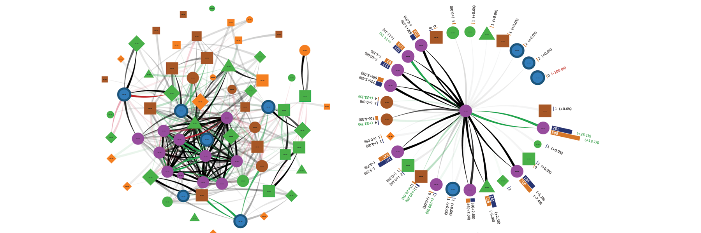
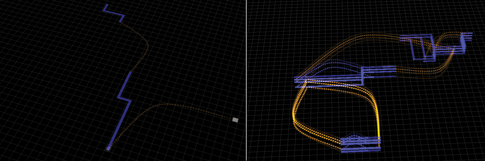
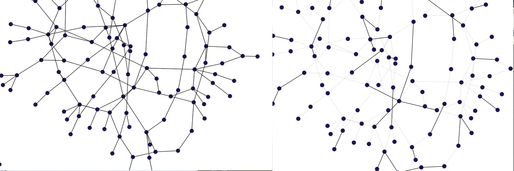
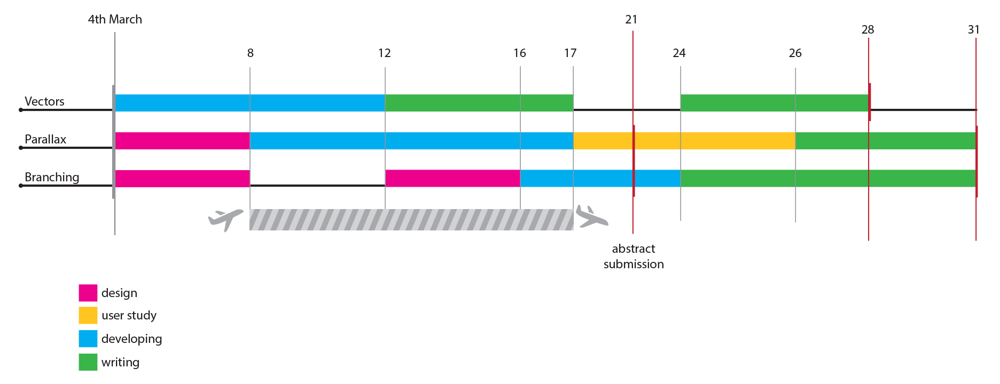
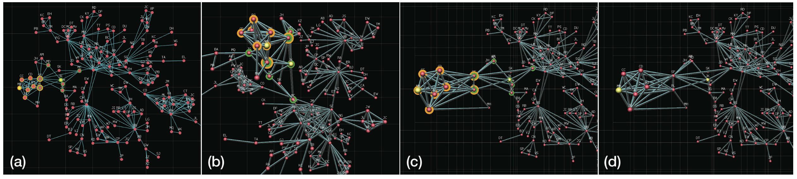
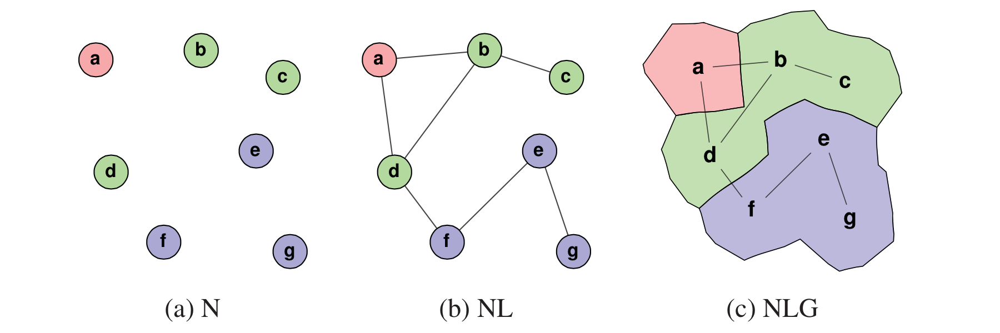
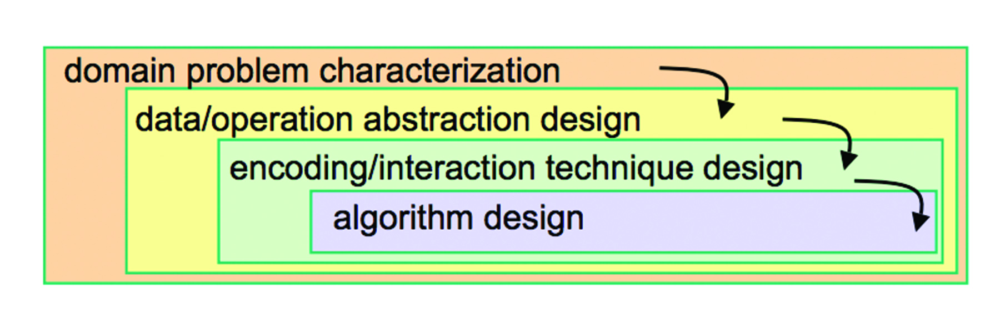

MVV: Visualizing a weighted directed graph over time
Summary
This project was developed to highlight the changes over time in a directed, weighed graph.
The user can selected the time frame of interest, and select a threshold under which the links are not displayed. Links opacity
represents the node weight, and the link is green if the link weight had a remarkable increase in the last time frame, red if it had
a decrease.
By clicking on a node, a flower-layout will details the "indegree" and "outdegree" of the selected node.
MVV: Visualizing the flow of code
Summary
This small project tries to visualize the execution of source code. The flow change directions when there is a branch, blue arches are loops, orange arches are call to other functions and new layers represents recursion calls. A demo showing the sorting of an array with quick-sort is here
MVV: Visualizing links uncertainty on a graph
Summary
Visualizing uncertainty is one of the most debated topics in data visualization. It is not clear which is the most straightforward visual encoding.
Should be used a color gradient, an opacity or the size of the element? In this visualization links remain visible on the screen
for a time proportional to their probability. Probable interconnections are depicted with links that are almost stable, unprobable interconnections are
very flickering.
Checkout my demo here
Indicative schedule for the next month
Inserted on March 3

Stereoscopic Highlighting: 2D Graph Visualization on Stereo Displays
Inserted on March 2

Summary
The purpose of this study is to propose alternative techniques for graph representation which leverages stereo displays.
The work presents a the technique which involves bringing graph subsets of interest closer to the viewer in order to support tasks such as adjacency identification.
The major advantage of this technique, called stereoscopic highlighting, is the possibility to focus on portions of the network without exploiting other highlighting
techniques (eg. colors). By doing so, these dimensions are free for other visual encodings.
The technique is meant to retain benefits of a 2D representation and keeping the benefits of 3D display technologies.
An user study is conducted to prove the efficacy of the proposed technique in its different versions and the traditional node-link representation.
For this purposes a set of tasks and hypothesis are made and then validated.
After validating the effectiveness of the technique, a further extension is proposed. The key idea is to use different plane of depth to help the visualization
of complex queries.
Comments
The technique presented is interesting although it requires stereo display to be used. Howerer, 3D monitors and 3D glasses such as
oculus rift are becoming popular. The spreading of new technologies this make studies of novel techniques extremely interesting.
The stereoscopic highlighting technique is quite simple. However, my opinion is that the field of visualization is a relatively
young science that still need to lay the foundations especially when dealing with new hardware. For this reason well-curated analysis
of simple technique might be a valuable example and contributions for future works.
Relevance in my research
This work is related to my research for two reasons: firstly, the user study conducted might be taken as example for user study included
in my future works to validate new visualization techniques. Secondly, the proposed technique is similar to the "parallax technique for
overlapping edges disambiguation" that I'm currently developing.
The user study conducted follows the classic procedure: task identification, hypothesis and results. The user study try to focus on few, important
characteristic to avoid too many "dimensions" (such as user interaction to zoom and pan). Additional extensions are only presented and not validated
in the user study. This can be an hint for my works, which include both visual representation and user interaction. I should narrow down the
set of task to validate to a limited number.
The presented technique try to speed up some common tasks in node-link representation, as my work is meant to do. This paper might be taken as
example for the selection of few, easy to measure tasks.
Node, Node-Link, and Node-Link-Group Diagrams: An Evaluation
Inserted on March 2

Summary
This paper conducts an user study to investigate on the performances of three visualization techniques: node diagrams, node-link diagrams, node-link-group diagrams.
The three different visualization techniques encode a progressively higher quantity of information. node diagrams shows only nodes and node color, node-link diagrams shows
relationships between elements and node-link-group diagrams enclose elements which belongs to the same category into a regions.
The purpose of the study is to identify which is the impact on the standard graph tasks when adding additional information on the representation. The paper identifies the tasks
that every visualization enables, and compares the performance in terms of accuracy and time to the other representations. Since the three representations
encode different information, the tasks are grouped in three categories: node-based tasks, network-based tasks and group-based tasks.
The performance of every technique is analyzed with respect to the representation density. The paper makes some hypothesis of how the performance will change according to the
representation chosen and the taxonomy and density of the data.
Comments
I consider the user study conducted in this work really convincing. Firstly, the author effectively identify which are the relevant task
and hypothesis to be considered. Secondly, the user study is well designed and detailed. Indeed it uses different dataset with different density metrics, and provides
a large number of statistical information.
The only concern is the over-simplified representation of groups. The authors deliberately ignore non-continuos and overlapping regions.
Relevance in my research
My research includes the design and the study of a technique called BranchingSets.This paper is relevant to my studies because it is an example
of how to make an user study to compare different techniques. Differently from other works which involve user study to validate a visualization technique,
the three techniques enable quite different tasks. The purpose of the work is to show how the performance changes when an extra layer of information is
added to the representation. BranchingSets faces the same issues, indeed my technique adds categories information as an overlay on traditional node-link
representation. Might be interesting to compare the accuracy and time to complete regular node-link tasks on my technique and the regular node-link diagram.
Furthermore, I found interesting to compare the performances when an additional metric (e.g. the density of the graph) changes.
A Nested Model for Visualization Design and Validation
Inserted on Feb 1

Abstract
We present a nested model for the visualization design and validation with four layers: characterize the task and data in the vocabulary of the problem domain, abstract into operations and data types, design visual encoding and interaction techniques, and create algorithms to execute techniques efficiently. The output from a level above is input to the level below, bringing attention to the design challenge that an upstream error inevitably cascades to all downstream levels. This model provides prescriptive guidance for determining appropriate evaluation approaches by identifying threats to validity unique to each level. We also provide three recommendations motivated by this model: authors should distinguish between these levels when claiming contributions at more than one of them, authors should explicitly state upstream assumptions at levels above the focus of a paper, and visualization venues should accept more papers on domain characterization.
Summary
This paper proposes a strategy to design and validate visualization solutions effectively. The proposed model is composed by four steps:
- characterize the tasks and data in the vocabulary of the problem domain
- abstract into operations and data types
- design visual encoding and interaction techniques
- create algorithms to execute these techniques efficiently
The authors points out that those steps must be followed in order, since the achievements of the previous steps are the "inputs" of the following step. After a description of what each steps is meant to deal with, the author try to indentify which are the common pitfalls in each step, the so called "threats". Each threats must be overcame and different validation strategies applies. For instance, some step must be validated with results "downstream" (the so called "downstream validation"), others can be validated at the same step (immediate validation)
Suggested strategies to effectively adopt this four step model is to adopt iterative loops and rapid prototyping. This strategy requires a strong and frequent interaction with domain experts, and results in a repetition of the four step to have a constant feedback and validation.
The report some examples which adopt the described model in different formats. Not in all the cases all four steps are considered. For instance Noack’s LinLog paper does not face the algorithms step, it consider the design of a better algorithm in a future work.
Comments
Proposing a model to design a visualization tool is a challenging task. The author capture some recurrent schema and
task in the process of developing a visualization and identifies the common threats and adopted validation methods.
As discussed in "CREATIVITY SUPPORT TOOLS" paper, a way to be "creative" comes from following the rules rigorously.
Even if I might disagree with this interpretation, I recognize that the design of a visualization is not merely "creative".
Indeed, some step of the process (especially 1,2) requires to be backed up with rules that can help to avoid common mistakes.
I found interesting the discussion about a very common problem in some visualization papers. It seems that often there is a mismatch between
the level at which the contribution is claimed and the validation methodologies chosen. This lead to a partial validation of your
work. As discussed in the paper "Challenges and Unsolved Problems" to find a proper and unbiased validation to the visualization tool is still an open
challenge.
I would like to spend some words on the "iterative loop" approach. That reminds me the "Agile developing" technique well know to programmers.
This proves how in every field where the design and technical skills are not possessed by the domain experts it is required a
careful and iterative collaboration between developer and expert.
Process and Pitfalls in Writing Information Visualization Research Papers
Inserted on Feb 1
Abstract
The goal of this paper is to help authors recognize and avoid a set of pitfalls that recur in many rejected information visualization papers, using a chronological model of the research process. Selecting a target paper type in the initial stage can avert an inappropriate choice of validation methods. Pitfalls involving the design of a visual encoding may occur during the middle stages of a project. In a later stage when the bulk of the research is finished and the paper writeup begins, the possible pitfalls are strategic choices for the content and structure of the paper as a whole, tactical problems localized to specific sections, and unconvincing ways to present the results. Final-stage pitfalls of writing style can be checked after a full paper draft exists, and the last set of problems pertain to submission
Comments
The author summarizes in the essay a number of common mistakes and pitfall that, according to her experience,
often lead to paper rejection.
Some mistakes are merely grammatical, others are due to bad structure of the paper or unclear targets.
I have found interesting the following advices:
-
A great coding effort does not necessary mean that your paper should include implementation details
Indeed, a visualization paper should focus on the representation techniques, and include programming details only if they are particular interesting such as a fast algorithm or a very complex system design. - Before start writing a paper it is necessary to have clear in mind which is the type of the paper, the contributions, and the validation method
- A 3D visualization must be carefully legitimized. 3D is not just a "2D with an extra dimension" but leads to a lot of design and visualization issue such as occlusion, hard to measure distances and navigation.
-
To validate your own work effectively is probably one of the most challenging aspect of a visualization research.
Do not use toy example to show the effectiveness of your tool, and every design choice that is not supported from other papers must be discussed in deep.
Even if some suggestions might sound obvious, the author clearly states that all the mistakes she has reported in the essay have been witnessed very often. For someone who is new to the field this paper is absolutely something worth to read.
Hierarchical Edge Bundles: Visualization of Adjacency Relations in Hierarchical Data
by Danny Holten
Inserted on Jan 27

Abstract
A compound graph is a frequently encountered type of data set. Relations are given between items, and a hierarchy is defined on the items as well. We present a new method for visualizing such compound graphs. Our approach is based on visually bundling the adjacency edges, i.e., non-hierarchical edges, together. We realize this as follows. We assume that the hierarchy is shown via a standard tree visualization method. Next, we bend each adjacency edge, modeled as a B-spline curve, toward the polyline defined by the path via the inclusion edges from one node to another. This hierarchical bundling reduces visual clutter and also visualizes implicit adjacency edges between parent nodes that are the result of explicit adjacency edges between their respective child nodes. Furthermore, hierarchical edge bundling is a generic method which can be used in conjunction with existing tree visualization techniques. We illustrate our technique by providing example visualizations and discuss the results based on an informal evaluation provided by potential users of such visualizations.
Summary
Comments
Challenges and Unsolved Problems
by Robert S. Laramee and Robert Kosara
Inserted on Jan 26

Summary
It has been noticed in the 20th century a shift in visualization research. Once that the fundamental problem are solved, new directions needs to be explored.
Thanks to the new technologies new approaches and possibilities are available. The essay is a vast overview of the most significant and unsolved problems.
Human Centered Challenges
- Interdisciplinary collaboration
Researchers in the visualization field must work closely to the domain experts. Cover the gap - Evaluation of usability
Software usability. Skepticism for the human-centered evaluation, they are time consuming and error prone. Hard to design and to implement - Finding the most effective visual metaphors
Represent an abstract data with a geometry. Huge collection of solutions. It seems to be one of the most important challenges in the field of visualization. Is difficult to achieve a representation that is intuitive, scalable and represents high dimensional data - Choosing optimal levels of visual abstraction
Optimal is user dependent. But the general guideline is Overview first, zoom and filter, then details-on-demand, the so-called "Visual Information Seeking Mantra". - Collaborative visualization
Need to share the visualization with another user, possibly in different locations. Of course this challenge does not exist in simple static visualization, but it might be non-trivial for more complex interactive visualizations. Eg. who is in charge to control the visualization, how to communicate between users, how to deal with the network latency, security and display technologies? - Effective interaction
New interactions that overcame the limitation of the keyboard and the mouse. Controlling the computer with hand gestures, speaking. - Representing data quality
Every piece of data has always a certain level of quality, or a degree of uncertainty. This is an information that visualization tools should show. So far, a large amount of visualizations simply does not care of this aspect.
Technical Challenges
- Scalability and large data management
As the data set grows, design and develop a suitable tool becomes more and more challenging. Not only for the limited hardware or the processing speed, but especially for the visualization algorithm perspective. - High data dimensionality and time-dependent data
Data can have up to hundred of dimensions. On a screen we can easily represent few dimensions, in order to get more we need to find new kind of representations.
Time is an additional dimension, but it is often threaten in a different way, for instance by adding animation to the visualization. - Data filtering
As the quantity of data grow, it is necessary to find suitable ways to filter the data. Although various techniques for feature extraction and data reduction exists, it is an open problem how to detect end filter interesting data. - Cross-plataform visualization
Unfortunately, the visualization tools are still platform dependent. Graphical acceleration relies on the type of graphic card, certain visualization might rely on the screen quality, or even on the type of OS.
Financial Challenges
- Evaluating effectiveness and utility in practice
It is hard to understand how to invest the money on visualization researches. It is difficult to pin down which researches are worth it. - Introducing standards and benchmarks
Whereas other areas of computer science have their own benchmarks to measure the performance of a given solution, the Data Visualization field still lacks of such a standardized way to measure the goodness of a solution. - From research into practice
A whole set of challenges stand between the research and prototyping and the real application, such as interdisciplinary communication problems, scalability, usability.
Comments
Scalability: data grow up more than computational speed scalability and level of abstacrion what does it mean intuitive
CREATIVITY SUPPORT TOOLS: Accelerating Discovery and Innovation
Inserted on Jan 25

Abstract
Since scientific discoveries and engineering innovation produce broad benefits, improved tools that advance individual, group, and social creativity are important contributions. The current and forthcoming generations of programming, simulation, information visualization, and other tools are empowering engineers and scientists just as animation and music composition tools have invigorated filmmakers and musicians (see the sidebar “New Media Arts and the Future of Technologies”). These and many other creativity support tools enable discovery and innovation on a broader scale than ever before; eager novices are performing like seasoned masters and the grandmasters are producing startling results. The accelerating pace of academic research, engineering innovation, and consumer product design is amply documented in journal publications, patents, and customer purchases.
Summary
Creativity supports tools are like microscopes. They extend the perceptual abilities of the researcher.
Traditional tools such business productivity tools differ from the creativity tools in terms of user iteration complexity and validation requirements.
Indeed, their interface is often well structured and their measure of success can be easily estimate by considering the number of tasks,
or the mistakes in a time frame.
The field of application for creativity support tools is extremely wide. Some application are meant to support discovery by scientists, or prototype software for engineers,
even models for architects or sketches for artists.
Creativity is traditinally considered as a rare talent, but nowadays general tought is that everybody can be creative. This is the positive effect of web,
of the exchanging information and new communication technologies. Furthermore, it can't be neglected the effect of a different approach to students education.
Three different way to see creativity:
- Structuralist: people who believe that creativity comes from following rules
- Inspirationalists: people who consider that creativity require structures to be ignored
- Situationalists: to be creative you have to be social
Furthermore, the essay briefly discuss about which are the key individuals and what type of changed it is expected in order to turn in action a creativity tool: Developers need to be more aware of the kind of innovation their efforts can lead to, Product manager must consider their user as "creators", and Researches have a major role in accepting the new tool and to assist its development.
Lastly, the essay points out the key aspects of a creativity support tool: the exploring, collaborations and history keeping, indeed creation require a lot of attempts and experiments.
Comments
Collaborations? What he many by history keeping How to evaluate a new idea software learning curve
Design Study of LineSets, a Novel Set Visualization Technique
by Basak Alper, Nathalie Henry Riche, Gonzalo Ramos, and Mary Czerwinski
Inserted on Jan 23

Abstract
Computing and visualizing sets of elements and their relationships is one of the most common tasks one performs when analyzing and organizing large amounts of data. Common representations of sets such as convex or concave geometries can become cluttered and difficult to parse when these sets overlap in multiple or complex ways, e.g., when multiple elements belong to multiple sets. In this paper, we present a design study of a novel set visual representation, LineSets, consisting of a curve connecting all of the setʼs elements. Our approach to design the visualization differs from traditional methodology used by the InfoVis community. We first explored the potential of the visualization concept by running a controlled experiment comparing our design sketches to results from the state-of-the-art technique. Our results demonstrated that LineSets are advantageous for certain tasks when compared to concave shapes. We discuss an implementation of LineSets based on simple heuristics and present a study demonstrating that our generated curves do as well as human-drawn ones. Finally, we present two applications of our technique in the context of search tasks on a map and community analysis tasks in social networks.
Checkout my demo: http://paduano.github.io/pathways/
Summary
The “common” way to visualize which elements belongs to a set is the Euler and Venn diagram. (If you don’t know the difference between Euler and Venn diagram visit : http://blog.visual.ly/euler-and-venn-diagrams/). They have some inherent limitation. If the number of sets and elements it too high complex concave shapes must be used and this lead to poor readability. LineSet are a way to represent sets which consists in lines which pass through each element of the set. They works extremely well (wrt the standard visualization techniques) when there are multiple intersection. LineSet implementation uses LKH travelling salesman heuristic in order to compute the shortest line which goes through all the data points.
Comments
The main concept of LineSet is to use line crossing instead visual overlap to identify set intersection. Eulero and Venn Diagram are intuitive tools but limited. LineSet seems to be a good solution for some visualization. They of course have some drawbacks:
- A line suggest an ordering. A viewer might mistakenly think that there is some kind of ordering of the elements of the set
- Do not capture the “space”. A line is one dimensional. The popular Eulero diagrams highlight a region of the space where the elements are located. A Lineset is less effective for this kind of visualization, but in some circumstances the position of the elements of the set is arbitrary.
- The cardinality of the set can be effectively visualized thanks to the size of the Eulero set. LineSets visualize the cardinality of the set with the length of the line.